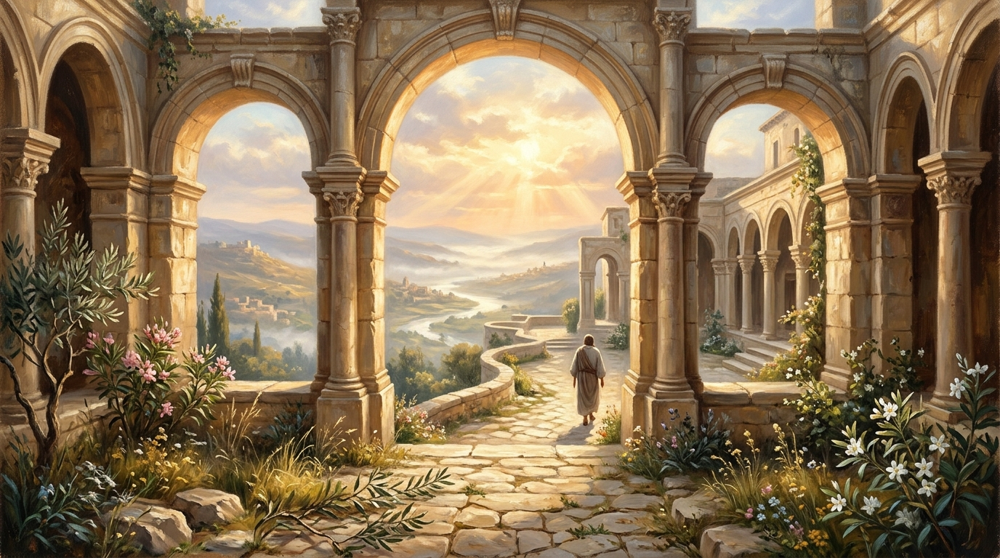

28 Października 2016

Panie Boże, nie potrafię samemu zadbać o moje szczęście.
Panie Boże, nie potrafię być zawsze silny.
Czym bardziej forsuję moje szczęście, tym bardziej jestem nieszczęśliwy.
Czym bardziej pokazuję moją siłę, tym bardziej wychodzi na jaw moja słabość.
Jedynie w Tobie, Panie, moje szczęście.
Jedynie w Tobie, Panie, moja siła.
Ja chcę żyć tylko, żeby Ciebie lepiej poznawać i wypełniać Twój plan na moje życie.
Ty jedynie jesteś królem mojego życia, całego mojego życia.
Wiem, że nie każdego dnia jestem w stanie wypowiedzieć te słowa.
Niemniej zawsze w głębi serca tego pragnę.
Nawet jak jestem czasami daleko od Ciebie, to zawsze chcę być blisko Ciebie, bo jedynie wtedy moje życie ma sens.
Nawet jak jest mi czasami ciężko w życiu, to z Tobą jest wtedy lżej.
Nawet jak jest mi czasami smutno, to z Tobą jest wtedy raźniej.
Nawet jeśli jestem czasami w beznadziejnej sytuacji, to z Tobą ta sytuacja nabiera sensu.
Ty jesteś drogą, prawdą i życiem.
Ty jesteś sercem, które utrzymuje wszelkie stworzenie przy życiu i pompuje przez jego żyły Twoją miłość, Twoje łaski, Twoje miłosierdzie...
Każde szczęście jest ulotne, jedynie Twoje szczęście jest wieczne.
"Zaiste, jeden dzień w przybytkach Twoich lepszy jest niż innych tysiące."